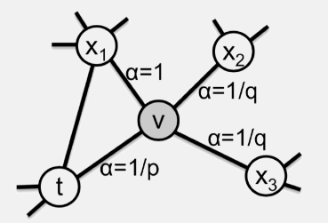

接着上一篇DeepWalk, 这里再来介绍一种图表示学习中的方法, node2vec.
前言
如果还不了解DeepWalk算法的同学, 可以看一下我的这篇文章.
这里的node2vec, 就可以算作其升级版, 也是一种图表示学习方法, 即基于图中节点的一些共现关系, 学习出每个节点的Embedding.
核心过程, 就是首先从图中抽取序列, 然后再利用word2vec算法进行学习. 下面就对node2vec的算法原理进行详细介绍.
原理
node2vec
熟悉树这种数据结构的同学应该都知道, 在遍历树的时候, 可以有两种策略, 广度优先搜索(BFS), 以及深度优先搜索(DFS).
BFS会从根节点开始, 优先探索该节点的子(邻近)节点, 然后再向更远的节点探索. DFS会从根节点开始, 优先探索该节点更远的节点, 探索到底后, 再回过头来继续从该节点的其它邻近节点进一步探索.
对于图来说, 也有这两种遍历方式.

由这两种方式得到的序列, 在节点相似性的呈现上, 具有不同的性质. 由BFS得到的序列, 会有一种结构相似性(structural equivalence), 结构相似性是衡量两个节点在网络中所在的位置和结构的相似性. 而由DFS得到的序列, 在经过word2vec学习后, 会展现出一种同质性(homophily), 即相邻的, 经常一起出现的节点会更加相似.
通俗来讲, 在图中, 从某个初始节点开始, 给定一个最大序列长度, 利用DFS得到的序列, 倾向于一条长链; 而利用BFS得到的序列, 更倾向于团簇的形式.

在DeepWalk中, 从图中抽取序列的方式, 就是随机游走, 虽然同时可以有BFS和DFS的效果, 但是并不可控. 于是, 在node2vec中, 通过加入两个超参数, 来形成一个带权重的网络, 以控制BFS和DFS的组成.
对于其论文中的一些公式, 这里就不多说了, 感兴趣的同学可以看原论文, 这里直接介绍其实现方式.
要想控制是BFS多一些还是DFS方式多一些, 一个办法就是通过改变当前节点向下一个节点的转移概率.

如上图, 其中的$t$节点表示上一个节点, $v$节点表示当前节点. 如果想要DFS多一些, 那么从$v$节点向$x_2$和$x_3$转移的概率应该大一些; 如果想要BFS多一些, 那么对应的返回上一个节点$t$的概率应该大一些. 同两个参数$p$和$q$来控制这种概率(未归一化):
其中的$d_{tx}$表示在图中, 由$t$节点到达$x$节点的最短距离, $d_{tx}=0$表示返回上一个节点, 对应参返回概率参数(Return parameter $p$); $d_{tx}=2$表示转移到更远的节点, 对应由内到外概率参数(In-out parameter $q$).
如果原始的图本身带有权重$w$, 那么在加入了$\alpha$后, 对应的未归一化权重为两者的乘积$\pi=w\cdot \alpha$
node2vec整体的算法流程为:
首先, 与DeepWalk一样, 要先用原始数据构成一个图, 设定一些超参数, 包括整体迭代次数$r$, 序列长度$l$, 窗口大小$k$, 向量维度$k$, 两个概率参数$p$和$q$.
然后一个重点部分, 是需要根据原本网络的权重, 以及参数$p$和$q$计算整个网络的新的权重. 这里考虑实际计算时, 对于每个序列的初始节点, 是没有上一个节点的, 所以可以对其各个相邻节点的权重进行归一化, 看做其作为初始节点的转移概率. 而当不是初始节点时, 对于每个节点, 需要计算基于各个相邻节点作为上一个节点时, 对应的转移概率. 或者换一个角度来说, 需要对每一条边, 来计算两组(分别作为当前节点)概率转移分布.
在有了一整套概率转移分布后, 就可以依照转移概率, 来进行游走以获得序列了. 最后用word2vec来对序列进行学习, 就大功告成了.
这里node2vec算法在构建图, 计算概率转移时, 是比较费时间的, 时间复杂度正比于图中边的数量. 但是还不算完, 当面对一个计算好的概率转移分布, 决定如何转移时, 怎么做呢? 一种简单的方法就是产生一个0-1的随机数, 然后看这个数值位于哪一个概率区间. 这样做的时间复杂度为$O(n)$, 其中$n$为当前节点相邻节点数量. 而如果使用二分法查找, 可以使时间复杂度降低到$O(\log n)$. 如果用一个很长(假设长度为$N$)的向量, 将各个概率按相对大小分布在向量上, 并在对应位置记录对应转移节点编号, 然后产生一个最大为$N$的随机数, 来决定应该向哪个节点转移, 这样做的时间复杂度为$O(1)$, 但是空间复杂度就比较高了… 在原始的word2vec负采样中, 就采取的这种方法, 但word2vec只需要维护一个这样的向量, 而node2vec这里的数量与连边数量成正比的.
那么, 有没有一种时间复杂度为$O(1)$, 空间复杂度也不高的算法呢?
Alias Method
Alias Method: 是的, 正是在下.
Alias Method是一种通用的概率采样方法, 主要针对对应离散概率分布, 下面通过举例来说明其运作流程.
假设现在有一个离散的概率分布为:
现在想让这些概率填充在一个$1\times4$的矩形中, 概率与面积成正比, 那么首先将它们都乘以4, 这样总面积等于4:
可以看到, 现在长为4了, 但是高并不是都为1, 所以现在要”截长补短”, 即将大于1的截取一部分, 填充到小于1的位置上. 同时规定, 一个位置上, 同时最多有两种概率.
现在先将第1个概率截取一部分填补到第4个位置上:
再将第1个概率截取一部分填补到第3个位置上:
现在还有第1个位置上的小于1, 同时第2个概率大于1, 因此将第2个概率截取一部分填补到第1个位置上:
到了这一步, 就有了两个向量, 在每次采样时, 只需要两步:
- 随机生成一个1-N(N为离散变量数)的数, 用以确定向量中的位置.
- 随机生成一个0-1的数, 用以确定产生哪个离散变量.
比如先随机得到3, 然后再随机得到$1/2$, 由$1/2<2/3$, 可采样得到变量1.
这样的采样方式, 在生成了上面的概率向量以后, 采样时的时间复杂度为$O(1)$. 这里也解释为什么上面要规定每个位置上最多只能有两个概率, 因为如果有多个概率, 那么在随机生成一个0-1的数后, 就不是$O(1)$的时间复杂度了.
进一步, 给定一个离散概率分布, 这样的向量一定可以构建出来吗, 答案是肯定的, 因为: 整体的面积为$N$; 如果当前某个位置上概率小于1, 必有另一个位置上概率大于1.
使用Alias Method, 构建这个概率向量的时间复杂度为$O(n^2)$, $n$为离散变量数, 而通过队列来进行优化, 可以缩减到$O(n)$.
小结
以上, 就是node2vec的全部内容了, 由DeepWalk, BFS, DFS出发, 介绍了node2vec的原理和算法流程, 并对其中的一些细节, 比如概率转移时的采样方法也进行了讲解.
node2vec通过调整两个参数$p$和$q$, 来调整从图中抽取序列的方式, 在具体的任务和场景中, 可以尝试不同的组合. 一般来说, 合适的参数下, 相比DeepWalk会有更好一点的效果.